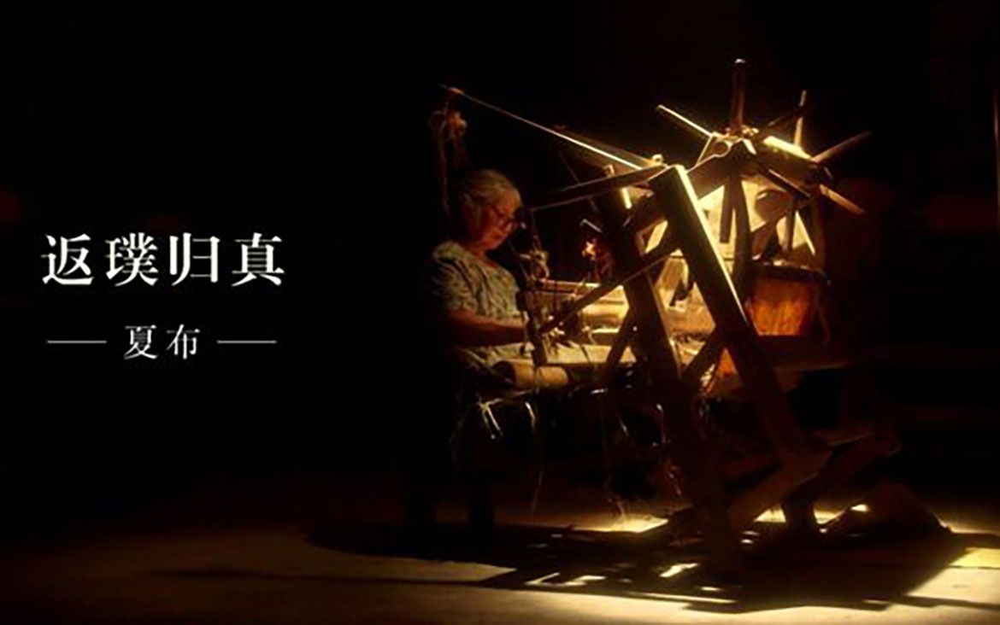
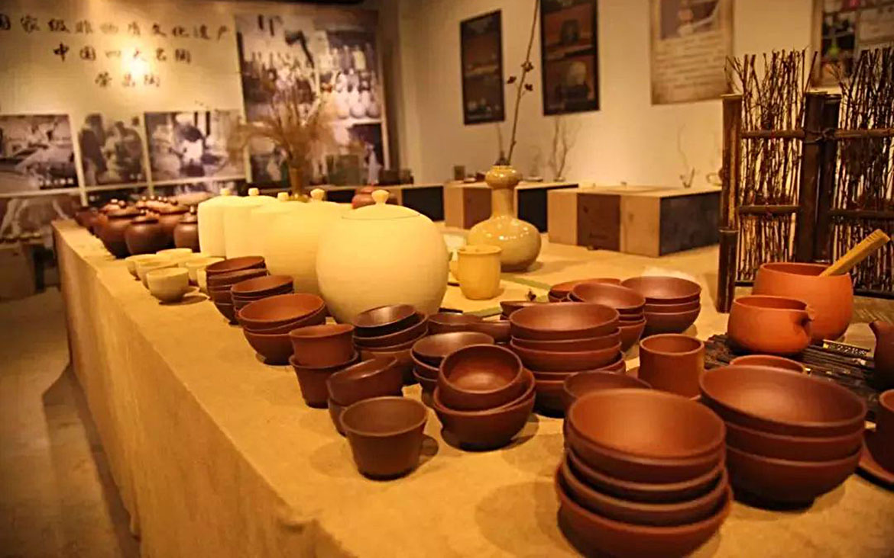
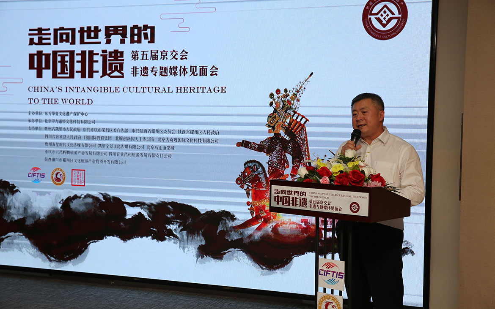

天下海棠本无香，独荣昌海棠香扑鼻——荣昌古称昌州，雅称“海棠香国"，取”繁荣昌盛“之意，拥有1250年的文化底蕴。地处成渝经济区腹心地带，以“高质量、供给侧、智能化”引领发展，打造成渝城市群新兴战略支点。
荣昌区把“非遗”文化产业作为实体经济的重要组成部分，不仅让非物质文化遗产得到有效的保护传承，而且实现良好的开发利用，推动资源优势转化为产业优势，实现产业优势转变为经济优势。2017年，荣昌区文化产业总产值实现62.8亿元，文化企业约2300余户，产业集群效应初步显现，正在成长为全区重要的支柱产业之一。
千年古城的荣昌，是“湖广填四川”的重要聚集地，被誉为“客家文化活化石”。荣昌陶器、荣昌夏布均成功注册国家地理商标，和荣昌折扇一起被誉为“客家文化活化石”。
• 匠心神韵，三大非遗大放异彩
2013年起，荣昌注重文化创意产业发展，相继投入24亿元打造“夏布创业基地”、“安陶小镇”和“中国夏布小镇”，使得非遗回归现代生活，极大提升非遗产业的集聚度。与此同时，更加注重陶瓷工业的发展，构建陶瓷工业园 + 企业研发中心 + 科研机构合作模式，形成产业和人才的生态支撑。
三类展品从上百家企业、工作室提供的上千件作品中脱颖而出，工艺精湛、文雅大方，集工艺、文化、美术、科学价值于一体，是荣昌区乃至重庆市一张不可复制的文化名片。
• 创意文化产业 · 再现非遗活力
2013年起，荣昌注重文化创意产业发展，相继投入24亿元打造“夏布创业基地”、“安陶小镇”和“中国夏布小镇”，使得非遗回归现代生活，极大提升非遗产业的集聚度。与此同时，更加注重陶瓷工业的发展，构建陶瓷工业园 + 企业研发中心 + 科研机构合作模式，形成产业和人才的生态支撑。
• 文旅融合发展，打造成渝经济带“非遗之城”
为激活非遗文化、打造特色文化品牌、促进非遗变成产业，荣昌政府通过构建“教育 + 文化 + 旅游 + 商业”的产业新格局，打造“非遗之城“，实现非遗品牌的提档升级，走向世界。并继续在文旅产业中深度融合非遗文化因子，以大文化、大旅游、大产业实现大融合的文旅产业。
荣昌展区的企业均与台湾地区、新加坡、日本、韩国等国际知名工艺大师合作，并借助旅游大数据系统分析充分挖掘市场需求，用多元化的方式打造“会说话”的非遗产品，让非遗从产品输出变成品牌输出。
荣昌特色非遗作品已登录非遗国际营销平台